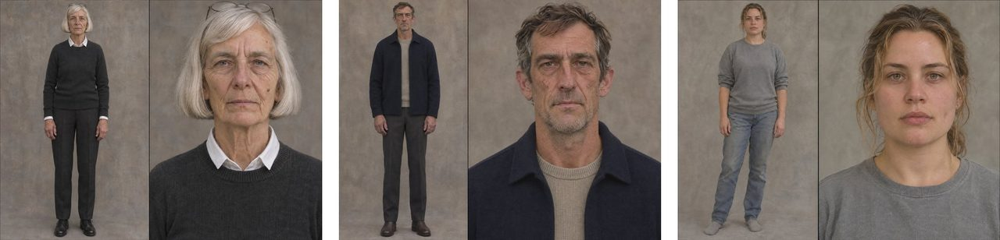

1인 제작 SF 단편 · 2026
판정 불가
영상 속 여자는 찍힌 사람일까요, 그리워서 만든 사람일까요.
아이가 찍은 영상처럼 보이도록 카메라 높이와 빛을 바꿨습니다
첫 장면은 150년 전 부엌에서 아이가 찍은 영상입니다. 처음 뽑은 시험본은 어른 가슴 높이에서 저녁 조명으로 찍혀 아이의 시선으로 보이지 않았습니다. 카메라를 조리대 높이로 낮추고 빛을 늦은 아침 햇빛으로 바꿔 다시 뽑았습니다.
옛 영상처럼 보여야 해서 이 저화질 시험본을 업스케일하지 않고 그대로 최종본에 사용했습니다.

모든 샷에 같은 얼굴이 나오도록 생성할 때마다 이 시트를 참조 이미지로 넣었습니다.
규정 위반을 생성 전에 막는 장치를 만들었습니다
해당 경진대회는 기존 영화 자료를 생성형 AI에 넣는 것을 금지했습니다. 그래서 영상 생성 요청이 나가기 직전에 자동으로 검사하는 장치(훅)를 만들었습니다. 금지어가 들어 있거나 제가 승인한 문장과 한 글자라도 다르면 요청이 나가지 않습니다.
생성 직전 검사 훅 — 코드 발췌
277def decide(payload):278 """→ (None|'deny'|'ask', reason). None = 허용."""279 tool = payload.get("tool_name") or ""280 if not is_spend(tool):281 return None, ""284 reqs = extract_requests(ti)288 texts = []289 for r in reqs:290 collect_texts(r, None, texts)293 hits = lint_texts(texts, load_rules(root))294 blocks = [h for h in hits if h[0] == "BLOCK"]295 warns = [h for h in hits if h[0] == "WARN"]걸리면 요청을 거부(BLOCK)하거나 사람에게 확인을 받습니다(WARN).
에이전트 넷이 나눈 일
| 에이전트 | 맡은 일 |
|---|---|
| 작가 | 영화 줄거리를 모르는 상태로 시나리오 초안을 씁니다 |
| 연출 | 프롬프트를 쓰고 받은 영상을 검수합니다. 생성 요청 권한은 없습니다 |
| 규정 감사 | 규정 위반만 찾습니다. 파일을 고칠 수 없습니다 |
| 블라인드 심사 | 다른 에이전트의 보고서를 보지 않고 결과물만 평가합니다 |
다시 생성하지 않고 화면을 키워 고쳤습니다
마지막 장면에서 휴대폰이 탁자에 혼자 서 있는 것처럼 보였습니다. 다시 생성하는 대신 화면을 113%로 키워 휴대폰 아랫부분을 화면 밖으로 밀어냈습니다.
- 제작
- 전 과정을 혼자, 약 10시간 소요
- 최종본
- 16샷 · 세 번에 나눠 생성하고 그때마다 검수